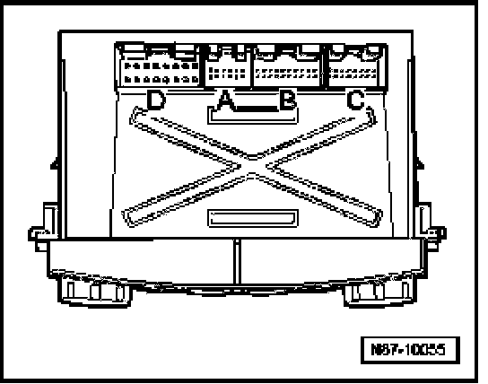
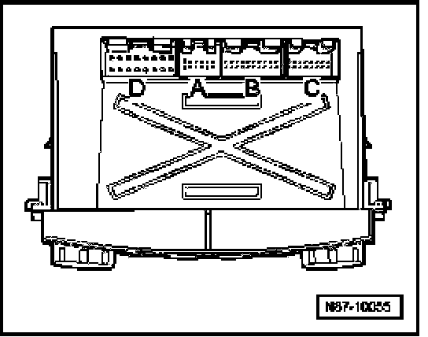

Rear A/C Control Head (Climatronic) -E265-, Multi-Pin Connector Assignments
Rear A/C Control Head (Climatronic) -E265-, Multi-pin Connector Assignments
Multi-pin connector -A-, vacant
Multi-pin connector -B-, in wiring diagram T20ca

1. Rear Blower Regulation Sensor -G463- (voltage supply)
2. Left Rear Air Flap Motor -V239-
3. Right Rear Air Flap Motor -V240-
4. Left Rear Air Flap Motor -V239-
5. Right Rear Air Flap Motor -V240-
7. Left B-Pillar/Footwell Shut-off Flap Motor -V212-
8. Right B-Pillar/Footwell Shut-off Flap Motor -V211-
9. Left Rear Upper Body Vent Motor -V315-
10. Right B-Pillar/Footwell Shut-off Flap Motor -V211-
12. Right Rear Temperature Flap Motor -V314-
13. Right Rear Temperature Flap Motor -V314-
14. Left Rear Temperature Flap Motor -V313-
15. Left Rear Temperature Flap Motor -V313-
16. Right Rear Upper Body Vent Motor -V316-
17. Right Rear Upper Body Vent Motor -V316-
Multi-pin connector -C-, in wiring diagram T16ca

2. Left Rear Upper Body Vent Motor -V315-
3. Left B-Pillar/Footwell Shut-off Flap Motor -V212-
4. Left Rear Air Flap Position Sensor -G389-
5. Left B-Pillar/Footwell Shut-off Flap Motor Position Sensor -G329-
6. Right B-Pillar/Footwell Shut-off Flap Motor Position Sensor -G328-
7. Right Rear Air Flap Position Sensor -G390-
12. Rear Blower Regulation Sensor -G463- (pulse-width modulation activation)
13. Right Rear Upper Body Vent Position Sensor -G472-
14. Left Rear Temperature Flap Position Sensor -G391-
15. Right Rear Temperature Flap Position Sensor -G392-
16. Left Rear Upper Body Vent Position Sensor -G471-
Multi-pin connector -D-, in wiring diagram T16cb

1. Terminal 30 (B+)
3. 5 volt reference voltage supply for rear position sensors -G328-, -G329-, -G389-, -G390-, -G391-, -G392-, -G471- and -G472-
6. Ground (GND) signal for -G405 and -G406-
7. Ground (GND) signal for rear position sensors -G328-, -G329-, -G389-, -G390-, -G391-, -G392-, -G471- and -G472-
8. CAN Bus - High
10. Right Rear Vent Temperature Sensor -G406-
11. Left Rear Vent Temperature Sensor -G405-
12. Rear Evaporator temperature Sensor -G464-
13. Rear Blower Regulation Sensor -G463- (feedback voltage)
14. CAN Bus shielding
15. Terminal 31 - Ground (GND)
16. CAN Bus - Low